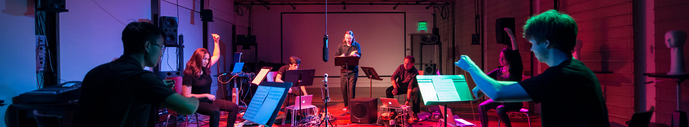

Read Excerpt from Artful Design

“That the notion of a ‘laptop orchestra’ is seemingly paradoxical is one of my
prime motivations for creating one; the pairing of these two inventions is perhaps obvious only because
of its apparent impossibility. One is an almost archaic institution whose continued existence is
something of a miracle, the other a technological newcomer that has become commonplace and seems
likely to be with us, at least in some form, for quite some time. One serves to perform primarily
European music from centuries ago, while the other is a convenient tool for editing text, crunching
numbers, browsing the Web, and checking e-mail. Never the twain shall meet.”
—Dan Trueman
check out the Stanford Laptop Orchestra | Princeton Laptop Orchestra